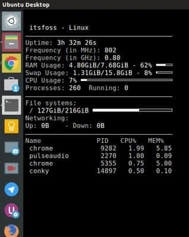
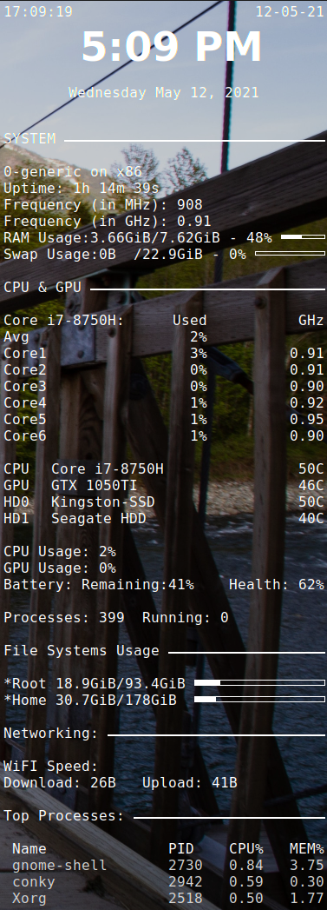

Linux system monitor
Introduction
When we are using windows, there are plenty of options to choose from, to monitor your system
stats, like MSI Afterburner or Asus gpu-tweak. But when it comes to linux, we are stuck
using commands like htop, sensors or nvidia-smi to monitor the stats of our linux system.
Instead, what if I told you that there is an elegant solution to your queries like: How to
monitor CPU and GPU temperature in linux or system temperature monitor in linux. The
solution is in a free software called conky.
Installation and Configuration
Conky is a techy looking, lightweight and highly configurable free system monitor for linux
distros like Ubuntu, Fedora, Arch and others. And on top of that, it is easy to
install.
Installation on Debian and Ubuntu are as swift as can be via
the terminal:
sudo apt install conky
To install on Fedora:
sudo yum install conky
To install on Arch:
pacman -S conky
After you have installed conky on your system you will see a screen like this:

Now, I know that it doesn’t looks all that cool now, but just stay with me and we are going to convert it from that to this:

To do that, we are going to need a conky theme file or we can also use conky manager. Today, I am going to show you, how we can use conky theme file(or .conkyrc file) as it is easy and straight forward, plus I prefer it being a programmer, I get to use and edit the script myself, thus making it highly configurable. Although, you can also do the same with conky manager if you prefer a Graphical User Interface.
Now there are following steps to follow:
-
Installing conky, like mentioned above.
-
Editing the Lua based .conkyrc file located in /etc/conky with the help of any text editor to suit yourself or you can download my .conkyrc file from here.
-
For most linux distros, placing the downloaded file in home directory should suffice, that way you don’t delete the original .conkyrc file located in /etc/conky. But in case it doesn't works, you should edit directly into /etc/conky.
-
After that place the .conkyrc file in the startup, so that it can starts by itself when the user logs in.
-
You can also debug the .conkyrc file by running it in the background using “conky -d conky”, or stopping it by simply writing “stop conky” in the command line.
And that concludes the installation and configuration of Linux System Monitor - Conky. I hope it helps, if you come across any problems in the way, feel free to contact me here. Also, if you like this article share it with your friends and follow me on github.